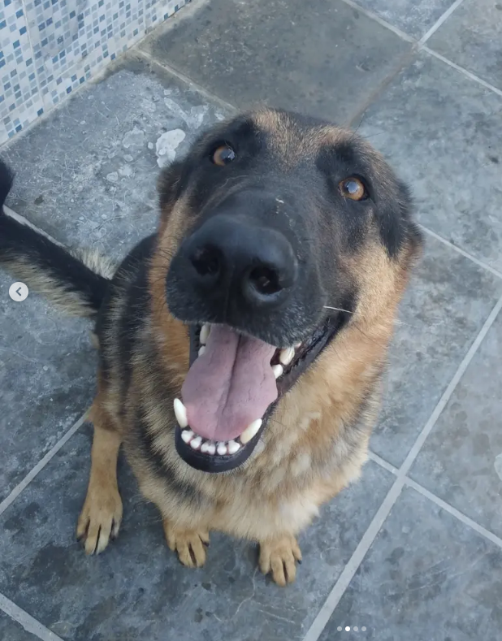

A história por trás do focinho mais confiável da política brasileira.

Zig nasceu nas ruas, cresceu lutando e hoje é o candidato que o Brasil não sabia que precisava. Pastor Alemão de puro sangue — ou não, ele nunca mostrou o pedigree, mas garante que é legítimo.
Com anos de experiência em vigilância noturna (late para qualquer coisa que se mova depois das 22h), negociação de petiscos (aquele olhar é imbatível) e gestão de território (nenhum gato invade o quintal impunemente), Zig traz para a política o que nenhum humano jamais conseguiu: lealdade incondicional.
Sua trajetória inclui passagens pelo sofá da sala (onde aprendeu sobre conforto social), pelo quintal (experiência em agronegócio) e pelo veterinário (vivência com o sistema público de saúde). Zig não promete o que não pode cumprir — a não ser não puxar a guia durante o passeio, isso ele promete e nunca cumpre.
Uma carreira forjada nas ruas, temperada no quintal e aperfeiçoada no sofá.
Nasceu em circunstâncias misteriosas. Primeiros latidos já demonstravam vocação para discursos públicos. Mordeu o chinelo do dono pela primeira vez — ato interpretado como "protesto contra o sistema".
Promovido a chefe de segurança após expulsar 3 gatos e 1 pombo suspeito. Taxa de criminalidade no quintal caiu para zero. Recebeu condecoração com um bifinho extra.
Eleito líder informal da rua após unir todos os cães do bairro em uma barreira sonora contra o carteiro. Índice de aprovação: 98% (2% eram gatos votando contra).
Anuncia sua candidatura em uma coletiva memorável no parque, interrompida brevemente para cheirar a traseira de um repórter. Slogan oficial: "O Brasil precisa de mais focinho."
Campanha em andamento com apoio popular massivo. Pesquisas indicam que Zig é o candidato mais confiável do país — principalmente porque é o único que nunca prometeu nada que não envolvesse ração.